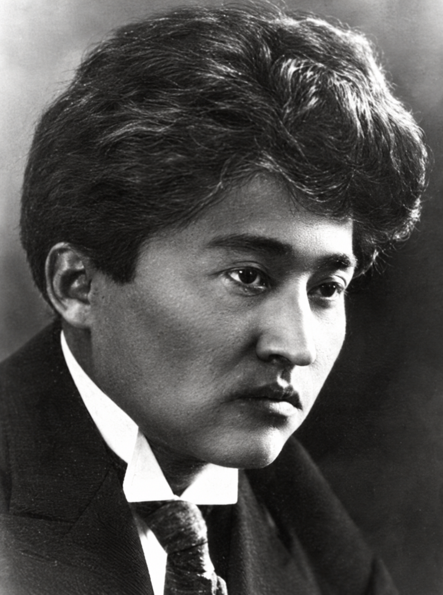

Знакомы ли вы с произведениями Магжана Жумабаева?
- Да
- Нет
- Знаю некоторые произведения
Литературное наследие · Научный проект
1893–1938 Поэт, педагог, переводчик
«Проблема воспитания молодёжи в произведениях Магжана Жумабаева: преемственность с ценностями программы „Адал азамат“»
Основная цель исследования — сопоставить идеи Магжана о воспитании молодёжи с ценностями современной программы «Адал азамат» и показать их преемственность.
Начать чтение
01 / Главная
Исследование посвящено проблеме воспитания молодёжи в произведениях Магжана Жумабаева. В ходе работы были проанализированы произведения поэта, обращённые к молодёжи, и его педагогические взгляды. Выделены такие ценности, как стремление к знаниям, трудолюбие, нравственность, честность, ответственность и патриотизм.
Кроме того, среди учеников 8–11 классов был проведён опрос, позволивший изучить отношение современной молодёжи к этим ценностям. Результаты исследования показали, что воспитательные идеи Магжана важны и для современного общества.
По итогам исследования был создан этот информационный сайт, чтобы познакомить современных школьников с духовным наследием Магжана и объяснить его воспитательное значение.
02 / Биография
Магжан Жумабаев — выдающийся казахский поэт, писатель, педагог, переводчик и общественный деятель. Он родился в 1893 году в Северном Казахстане.
Биографические сведения приведены по тексту проекта.
Родился в Северном Казахстане.
Окончил Омскую учительскую семинарию.
Опубликован труд «Педагогика».
Продолжил обучение в Высшем литературно-художественном институте в Москве.
Арестован, впоследствии отправлен в ссылку.
Освобождён.
Повторно арестован.
Расстрелян.
Магжан Жумабаев — выдающийся казахский поэт, писатель, педагог, переводчик и общественный деятель. Он родился в 1893 году в Северном Казахстане.
С ранних лет Магжан стремился к знаниям. Начальное образование он получил в ауле, затем учился в медресе в Кызылжаре и в медресе «Галия» в Уфе. Позже поступил в Омскую учительскую семинарию, которую окончил в 1917 году. Во время учёбы он знакомился не только с восточной, но и с русской и европейской литературой.
Магжан работал учителем и активно участвовал в народном просвещении. В 1922 году вышел его труд «Педагогика», внёсший значительный вклад в развитие педагогической мысли на казахском языке.
В 1923–1927 годах он продолжил обучение в Высшем литературно-художественном институте в Москве. В эти годы глубоко изучал русскую и западноевропейскую литературу.
За своё творчество и общественную деятельность Магжан неоднократно подвергался репрессиям. В 1929 году его арестовали и впоследствии отправили в ссылку. В 1936 году он был освобождён, но в 1937 году вновь арестован и в 1938 году расстрелян.
Впоследствии литературное наследие Магжана Жумабаева было возвращено народу, а его произведения стали одной из важнейших частей казахской литературы.
03–05 / Разделы исследования
Магжан Жумабаев — поэт-лирик, привнёсший в казахскую поэзию неповторимое художественное своеобразие. В его произведениях широко представлены темы любви, природы, судьбы страны, национального духа, образования и воспитания, будущего молодёжи. Одно из важных направлений его творчества — просвещение и национальное воспитание. Он призывал народ к знаниям, искусству и труду, возлагая большие надежды на молодёжь. Магжан хорошо знал литературу Востока и Запада и переводил лучшие образцы мировой литературы на казахский язык. Он знакомил казахского читателя с произведениями Гёте, Гейне, Лермонтова, Фета, Блока, Горького и других авторов. Наряду с поэзией поэт работал в области прозы, педагогики, публицистики и перевода. В его произведении «Грех Шолпан» глубоко раскрываются внутренний мир человека и его психологическое состояние.
Для Магжана литература была не только художественным словом, но и силой, которая воспитывает человека, побуждает его размышлять и служит будущему страны.
Взгляды Магжана Жумабаева на воспитание молодёжи широко отражены в его поэзии. Поэт воспринимал молодёжь не просто как поколение учащихся, а как людей, определяющих будущее нации и отвечающих за судьбу страны. В его стихотворениях знания, труд, патриотизм, мужество, единство и духовная чистота выступают основными направлениями воспитания молодёжи.
В этом отношении особое воспитательное значение имеет стихотворение «Я верю в молодёжь!». Магжан видит в молодых людях стойкость, волю, чувство достоинства и национальный дух. Поэт пишет:
Грозные, словно львы,
Магжан Жумабаев · «Я верю в молодёжь!»
Могучие, словно тигры,
С сильными крыльями, словно орлы, —
Я верю в молодёжь!
Так поэт образно описывает личные качества молодых людей. Образы льва, тигра и орла символизируют смелость, силу и стремление к высоким целям. Через них поэт призывает молодое поколение не поддаваться слабости и служить своей стране.
Строки стихотворения:
В их глазах играет огонь,
«Я верю в молодёжь!»
В их словах пылает пламя
также передают внутреннюю волю и духовную силу молодёжи. Для поэта настоящий молодой гражданин должен обладать целью, верой и стремлением к действию. Поэтому это произведение важно и для современного воспитания молодёжи.
В стихотворении «Казахский язык» Магжан связывает национальное воспитание с языком. Поэт считает родной язык важной ценностью, сохраняющей духовную самобытность народа. Показывая историю, силу и красоту казахского языка, он призывает молодое поколение уважать родной язык и беречь национальную культуру. Следовательно, в понимании поэта воспитание не ограничивается формированием характера отдельного человека: оно включает развитие национального сознания и исторической памяти.
Идея приобщения молодёжи к знаниям и поиску перекликается и с духовно-идейными установками таких произведений Магжана, как «Пророк». В творчестве поэта встречаются мысли, призывающие человека к духовному возвышению, сохранению совести и стремлению к добру. Это показывает, что он понимал воспитание не только как внешнюю дисциплину, но и как процесс формирования внутреннего мира человека.
Кроме того, любовь к Родине в произведениях Магжана выступает важной частью воспитания молодёжи. Для поэта любить свою страну — не только испытывать привязанность к родной земле. Это также заботиться о будущем страны, служить народу и направлять знания и силы на благо государства. Особенно ярко эта идея проявляется в произведениях о судьбе страны и национальной самобытности.
Стихотворение «Туркестан» также раскрывает значение исторического просвещения молодого поколения. Поэт изображает Туркестан духовным и историческим центром тюркских народов, формируя уважение к прошлому. Напоминая об исторических личностях и событиях, он побуждает молодёжь узнавать свои исторические корни и уважать наследие предков.
На основе анализа этих произведений взгляды Магжана Жумабаева на воспитание молодёжи можно разделить на несколько основных направлений:
| Направление воспитания | Отражение в произведениях Магжана Жумабаева |
|---|---|
| Патриотическое воспитание | Призыв к молодёжи служить своей стране и родной земле |
| Духовное воспитание | Высокая оценка совести, нравственности и внутренней чистоты |
| Воспитание трудолюбия и воли | Призыв к молодёжи быть деятельной и решительной |
| Приобщение к знаниям | Стремление видеть молодых людей ищущими и образованными гражданами |
| Национальное воспитание | Уважение к родному языку, национальной культуре и истории |
| Историческое воспитание | Формирование исторического сознания через Туркестан и историю тюркских народов |
Для поэта воспитанный молодой человек — не только образованный, но и любящий свой народ, ответственно относящийся к будущему страны, обладающий достоинством, волей и высоким духом. Вера Магжана в молодёжь получает особенно яркое художественное выражение в стихотворении «Я верю в молодёжь!» и созвучна его педагогическим взглядам.
Таким образом, в произведениях Магжана Жумабаева воспитание молодёжи тесно связано со знаниями, патриотизмом, нравственностью, национальным сознанием и силой воли. Поэт считает молодёжь будущим страны и призывает её становиться образованными, духовно сильными гражданами, обладающими чувством достоинства и служащими своему народу.
Между воспитательными идеями творческого наследия Магжана Жумабаева и современными ценностями «Адал азамат» существует явная преемственность. Качества, которые поэт хотел видеть в молодёжи в начале XX века, не утратили значения и сегодня. Для Магжана молодое поколение должно было быть образованным, сильным, достойным, патриотичным и полезным своему народу.
Эта идея прежде всего отражена в стихотворении «Я верю в молодёжь!». Поэт пишет:
Грозные, словно львы,
Магжан Жумабаев · «Я верю в молодёжь!»
Могучие, словно тигры,
С сильными крыльями, словно орлы, —
Я верю в молодёжь!
Так он изображает молодых людей сильными и волевыми личностями. Эти строки созвучны ответственности, активности, служению стране и целеустремлённости — ценностям современного понятия «Адал азамат».
Идея патриотизма в произведениях Магжана также тесно связана с воспитанием в духе «Адал азамат». Поэт связывает будущее молодёжи с будущим страны и желает, чтобы её знания, силы и воля были направлены на благо народа. С этой точки зрения вера Магжана в молодёжь — художественный образец воспитания гражданской ответственности.
Уважение к национальному языку в стихотворении «Казахский язык» перекликается с современными национальными ценностями. Поэт воспринимает родной язык как духовное богатство народа. Эта идея показывает важность воспитания уважения к казахскому языку, сохранения национальной культуры и традиций.
В стихотворении «Туркестан» поэт обращается к историческому наследию и родной земле. Представляя Туркестан как исторический центр тюркского мира, Магжан способствует формированию исторического сознания молодого поколения. Это созвучно необходимости для современного гражданина знать историю своего народа, уважать национальное наследие и ответственно относиться к прошлому и будущему страны.
В педагогических взглядах Магжана важное место занимает всестороннее воспитание личности. По его мнению, воспитание должно формировать не только ум человека, но и его характер, чувства, волю и духовный мир. Это созвучно цели современной идеи «Адал азамат» — формированию образованной и высоконравственной личности.
Эту преемственность можно увидеть в таблице ниже.
| Идея в произведениях Магжана | Современная ценность | Преемственность |
|---|---|---|
| Стремление к знаниям | Знания и поиск | Непрерывное обучение молодёжи |
| Служение стране | Патриотизм | Польза обществу и стране |
| Честность | Быть честным гражданином | Сохранение искренности и справедливости |
| Труд | Трудолюбие | Понимание того, что труд приводит к результату |
| Уважение к человеку | Нравственность | Уважение к другим и проявление доброты |
| Ответственность | Гражданская ответственность | Ответственность за результаты своих поступков |
| Национальный дух | Уважение к национальным ценностям | Признание ценности языка, истории и культуры |
Таким образом, воспитательные идеи произведений Магжана Жумабаева и современные ценности «Адал азамат» содержательно взаимосвязаны. Призывы поэта к молодёжи любить свою страну, учиться, быть сильной и служить народу созвучны воспитанию честного, ответственного и патриотичного гражданина в современном обществе.
06 / Опрос
Анонимный опрос учеников 8–11 классов, проведённый через Google Forms.
50учеников участвовали
Основная цель опроса — выяснить, насколько ученики знакомы с воспитательными идеями произведений Магжана Жумабаева и какие ценности считают важными для современной молодёжи.
Большинство учеников знакомы с произведениями Магжана Жумабаева.
48 учеников (96%) читали произведение «Я верю в молодёжь!». Это показывает, что стихотворение широко известно среди школьников.
20 учеников (40%) выбрали образованность как основное качество, раскрываемое в произведениях Магжана.
29 учеников (58%) назвали знания самой важной ценностью для современной молодёжи.
22 ученика (44%) связали понятие «Адал азамат» с честностью и справедливостью.
Все 50 учеников (100%) считают, что произведения Магжана, обращённые к молодёжи, необходимы современным молодым людям.
50 учеников (100%) считают, что чтение произведений поэта влияет на воспитание молодёжи.
50 учеников (100%) оценили честность как важную ценность.
22 ученика (44%) выбрали знания как самое необходимое качество для гражданина, полезного своей стране.
50 учеников (100%) поддерживают более широкое использование произведений Магжана в современной воспитательной работе.
Таким образом, опрос показал значение произведений Магжана Жумабаева для воспитания современной молодёжи. Ученики связывают наследие поэта с формированием образованности, честности, ответственности и патриотизма. 100% учеников поддержали широкое использование произведений Магжана в воспитательной работе.
По результатам опроса большинство учеников отметили, что воспитательные идеи произведений Магжана Жумабаева важны и для современности.
Чтобы сделать практический результат исследования доступным школьникам, был создан информационный сайт «MAGzhan». Его основная цель — собрать идеи Магжана Жумабаева о воспитании молодёжи и показать их связь с современными ценностями.
На сайте размещены основные материалы научного проекта. Его можно использовать как электронный информационный ресурс для школьников.
Эти вопросы были заданы школьникам, участвовавшим в исследовании.
07 / Заключение
В ходе исследования были рассмотрены основные идеи о воспитании молодёжи в произведениях Магжана Жумабаева. Установлено, что поэт придаёт особое значение формированию образованных, трудолюбивых, честных, ответственных и патриотичных молодых граждан, полезных своей стране.
Вера Магжана в молодёжь ярко выражена в произведении «Я верю в молодёжь!». Поэт видит в молодых людях будущее страны и ожидает от них знаний, силы, духовной стойкости и ответственности.
Исследование показало преемственность между воспитательными ценностями произведений Магжана и ценностями современной программы «Адал азамат». В частности, честность, стремление к знаниям, трудолюбие, патриотизм, ответственность и нравственность занимают важное место в обоих направлениях.
В ходе практического исследования был проведён опрос 50 учеников 8–11 классов. Его результаты показали, что большинство школьников знакомы с произведениями Магжана и считают раскрытые поэтом ценности важными для воспитания современной молодёжи.
Ещё одним практическим результатом исследования стало создание информационного сайта. Он охватывает основное содержание научного проекта: жизнь и творчество Магжана Жумабаева, проблему воспитания молодёжи, связь с ценностями «Адал азамат», результаты опроса и выводы исследования.
Исследование показало, что произведения Магжана Жумабаева — не только литературное наследие, но и важное воспитательное средство, позволяющее формировать нравственные и гражданские качества современного молодого поколения.
Гипотеза исследования подтвердилась: изучение воспитательных идей произведений Магжана в связи с современными ценностями позволяет повысить интерес школьников к национальным и общечеловеческим ценностям.
08 / Тест
«Насколько хорошо ты знаешь Магжана Жумабаева?»
10 вопросов. Выберите один ответ на каждый вопрос, затем проверьте свой результат.
09 / Приложения
Использованная литература, вопросы и результаты опроса.
Участвовали 50 учеников 8–11 классов. Опрос проводился анонимно через Google Forms.
Большинство учеников знакомы с произведениями Магжана Жумабаева.
48 учеников (96%) читали произведение «Я верю в молодёжь!». Это показывает, что стихотворение широко известно среди школьников.
20 учеников (40%) выбрали образованность как основное качество, раскрываемое в произведениях Магжана.
29 учеников (58%) назвали знания самой важной ценностью для современной молодёжи.
22 ученика (44%) связали понятие «Адал азамат» с честностью и справедливостью.
Все 50 учеников (100%) считают, что произведения Магжана, обращённые к молодёжи, необходимы современным молодым людям.
50 учеников (100%) считают, что чтение произведений поэта влияет на воспитание молодёжи.
50 учеников (100%) оценили честность как важную ценность.
22 ученика (44%) выбрали знания как самое необходимое качество для гражданина, полезного своей стране.
50 учеников (100%) поддерживают более широкое использование произведений Магжана в современной воспитательной работе.